Candidate List 20260323 Previous Day Next Day Section 1: New Sources (age<1d) Cosmological Afterglow
Section 2: Old (1-5d) sources observed last night placeholder
Section 1: New Afterglow/FBOT Cands Last Night (4)
1. ZTF26aaoucjm (Afterglow?) [Back to Top] [Share] [Trigger Swift] [Fritz ] [Lasair ]RA, Dec: 161.49788, 25.47288 10h45m59.49s, 25d28m22.36sGalactic (l, b): 209.12605, 61.90833 ext(g-r) = 0.037LegacySurvey: 1 sources in 3 arcsec Closest: d = 9.85 arcsec, 7.0 deg (east of north) photoz=0.82 (68% bounds 0.66, 0.98), type=PSF peak abs mag = -25.04 (68% bounds -24.46, -25.5) Consistent with synchrotron, g-r>0!
2. ZTF26aaouobv (Afterglow?) [Back to Top] [Share] [Trigger Swift] [Fritz ] [Lasair ]RA, Dec: 161.56594, 18.53808 10h46m15.83s, 18d32m17.08sGalactic (l, b): 222.89065, 59.99967 ext(g-r) = 0.036LegacySurvey: 1 sources in 3 arcsec Closest: d = 2.27 arcsec, 38.2 deg (east of north) photoz=1.04 (68% bounds 0.82, 1.24), type=REX peak abs mag = -27.38 (68% bounds -26.74, -27.85) Consistent with synchrotron, g-r>0!
3. ZTF26aaovlst (FBOT?) [Back to Top] [Share] [Trigger Swift] [Fritz ] [Lasair ]RA, Dec: 186.60897, 8.3937 12h26m26.15s, 8d23m37.31sGalactic (l, b): 284.24769, 70.35314 ext(g-r) = 0.023peak abs mag = -21.87 LegacySurvey: 1 sources in 3 arcsec Closest: d = 0.12 arcsec, 167.5 deg (east of north) photoz=0.08 (68% bounds 0.03, 0.19), type=DEV peak abs mag = -16.95 (68% bounds -14.75, -19.09) Consistent with synchrotron, g-r>0!
4. ZTF26aaovqvp (Afterglow?) [Back to Top] [Share] [Trigger Swift] [Fritz ] [Lasair ]RA, Dec: 161.26007, 18.09783 10h45m2.42s, 18d 5m52.20sGalactic (l, b): 223.47495, 59.5619 ext(g-r) = 0.028LegacySurvey: 1 sources in 3 arcsec Closest: d = 6.65 arcsec, 2.4 deg (east of north) photoz=0.49 (68% bounds 0.42, 0.55), type=REX peak abs mag = -25.42 (68% bounds -25.03, -25.72) Consistent with synchrotron, g-r>0!
Section 2: Older Sources Observed Last Night (36)
0. ZTF26aamitpu (Afterglow?) [Back to Top] [Share] [Trigger Swift] [Fritz ] [Lasair ]RA, Dec: 212.99223, 55.40955 14h11m58.14s, 55d24m34.38sGalactic (l, b): 101.17538, 58.18557 ext(g-r) = 0.017peak abs mag = -19.22 LegacySurvey: 1 sources in 3 arcsec Closest: d = 1.18 arcsec, 307.0 deg (east of north) photoz=0.04 (68% bounds 0.04, 0.04), type=SER peak abs mag = -18.77 (68% bounds -18.59, -18.99)
1. ZTF26aamiwuj (Afterglow?) [Back to Top] [Share] [Trigger Swift] [Fritz ] [Lasair ]RA, Dec: 283.02126, 43.08664 18h52m5.10s, 43d 5m11.91sGalactic (l, b): 72.75117, 18.03807 ext(g-r) = 0.107LegacySurvey: 1 sources in 3 arcsec Closest: d = 6.66 arcsec, 0.4 deg (east of north) photoz=0.52 (68% bounds 0.25, 0.72), type=REX peak abs mag = -25.61 (68% bounds -23.69, -26.44)
2. ZTF26aamqibe (FBOT?) [Back to Top] [Share] [Trigger Swift] [Fritz ] [Lasair ]RA, Dec: 170.82966, 34.37731 11h23m19.12s, 34d22m38.33sGalactic (l, b): 186.53409, 69.78081 ext(g-r) = 0.026peak abs mag = -20.39 LegacySurvey: 1 sources in 3 arcsec Closest: d = 0.86 arcsec, 53.7 deg (east of north) photoz=0.89 (68% bounds 0.58, 1.15), type=REX peak abs mag = -26.13 (68% bounds -25.02, -26.82)
3. ZTF26aamsxxm (Afterglow?) [Back to Top] [Share] [Trigger Swift] [Fritz ] [Lasair ]RA, Dec: 157.30472, 8.49369 10h29m13.13s, 8d29m37.29sGalactic (l, b): 235.19634, 51.57907 WARNING: -0.93 deg from ecliptic plane ext(g-r) = 0.037peak abs mag = -18.52 LegacySurvey: 1 sources in 3 arcsec Closest: d = 0.36 arcsec, 145.7 deg (east of north) photoz=0.11 (68% bounds 0.08, 0.13), type=SER peak abs mag = -18.75 (68% bounds -18.2, -19.26) Consistent with synchrotron, g-r>0!
4. ZTF26aamttvj (Afterglow?) [Back to Top] [Share] [Trigger Swift] [Fritz ] [Lasair ]RA, Dec: 210.73274, 7.28121 14h 2m55.86s, 7d16m52.35sGalactic (l, b): 346.71241, 63.89587 ext(g-r) = 0.027peak abs mag = -20.21 LegacySurvey: 1 sources in 3 arcsec Closest: d = 0.56 arcsec, 254.8 deg (east of north) photoz=0.19 (68% bounds 0.15, 0.27), type=REX peak abs mag = -19.94 (68% bounds -19.4, -20.83)
5. ZTF26aamwsha (Afterglow?) [Back to Top] [Share] [Trigger Swift] [Fritz ] [Lasair ]RA, Dec: 288.4845, -5.67158 19h13m56.28s, -5d-40m-17.70sGalactic (l, b): 30.41803, -7.5777 ext(g-r) = 0.561
6. ZTF26aancnlw (FBOT?) [Back to Top] [Share] [Trigger Swift] [Fritz ] [Lasair ]RA, Dec: 161.53961, -4.01597 10h46m9.51s, -4d 0m-57.51sGalactic (l, b): 253.94146, 46.59346 ext(g-r) = 0.052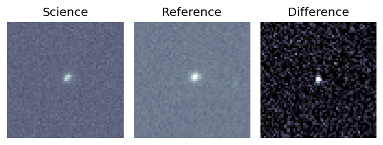
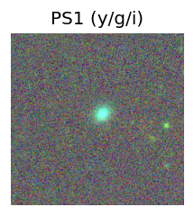
LegacySurvey: 1 sources in 3 arcsec Closest: d = 2.25 arcsec, 310.2 deg (east of north) photoz=0.12 (68% bounds 0.09, 0.14), type=SER peak abs mag = -19.69 (68% bounds -19.08, -20.03) 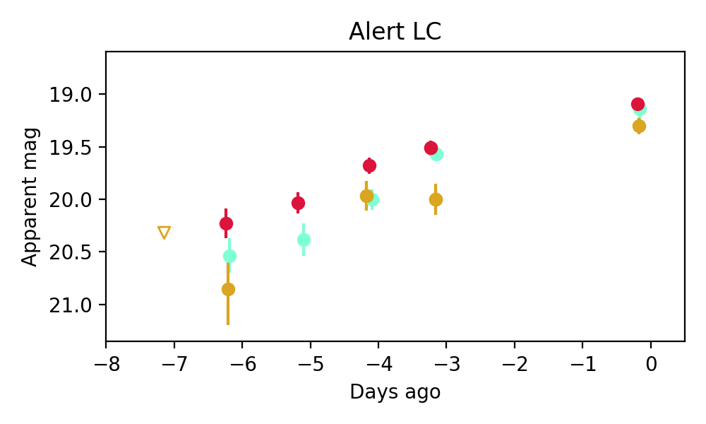
Consistent with synchrotron, g-r>0!
7. ZTF26aanfqhc (Afterglow?) [Back to Top] [Share] [Trigger Swift] [Fritz ] [Lasair ]RA, Dec: 236.66946, 12.14797 15h46m40.67s, 12d 8m52.69sGalactic (l, b): 21.69954, 46.37118 ext(g-r) = 0.062peak abs mag = -17.99 LegacySurvey: 1 sources in 3 arcsec Closest: d = 5.80 arcsec, 318.3 deg (east of north) photoz=0.03 (68% bounds 0.03, 0.04), type=SER peak abs mag = -17.05 (68% bounds -16.67, -17.54) Consistent with synchrotron, g-r>0!
8. ZTF26aanlofr (FBOT?) [Back to Top] [Share] [Trigger Swift] [Fritz ] [Lasair ]RA, Dec: 128.65865, 20.3041 8h34m38.08s, 20d18m14.76sGalactic (l, b): 204.6635, 31.43285 WARNING: 1.55 deg from ecliptic plane ext(g-r) = 0.035peak abs mag = -19.55 LegacySurvey: 1 sources in 3 arcsec Closest: d = 0.47 arcsec, 178.5 deg (east of north) photoz=0.17 (68% bounds 0.14, 0.23), type=REX peak abs mag = -19.98 (68% bounds -19.52, -20.77) Consistent with synchrotron, g-r>0!
9. ZTF26aanncqg (Afterglow?) [Back to Top] [Share] [Trigger Swift] [Fritz ] [Lasair ]RA, Dec: 134.82609, 21.80274 8h59m18.26s, 21d48m9.87sGalactic (l, b): 205.23805, 37.36103 WARNING: 4.52 deg from ecliptic plane ext(g-r) = 0.033peak abs mag = -18.69 LegacySurvey: 1 sources in 3 arcsec Closest: d = 3.21 arcsec, 348.2 deg (east of north) photoz=0.09 (68% bounds 0.09, 0.1), type=SER peak abs mag = -18.76 (68% bounds -18.63, -18.92)
10. ZTF26aanqytv (Afterglow?) [Back to Top] [Share] [Trigger Swift] [Fritz ] [Lasair ]RA, Dec: 183.92993, 36.32041 12h15m43.18s, 36d19m13.47sGalactic (l, b): 160.22691, 78.08837 ext(g-r) = 0.023LegacySurvey: 1 sources in 3 arcsec Closest: d = 6.87 arcsec, 46.7 deg (east of north) photoz=0.0 (68% bounds 0.0, 0.04), type=PSF peak abs mag = -11.52 (68% bounds -10.76, -17.02) Consistent with synchrotron, g-r>0!
11. ZTF26aanrbzi (Afterglow?) [Back to Top] [Share] [Trigger Swift] [Fritz ] [Lasair ]RA, Dec: 186.37065, 61.16829 12h25m28.96s, 61d10m5.83sGalactic (l, b): 128.47865, 55.67956 ext(g-r) = 0.018peak abs mag = -18.60 LegacySurvey: 1 sources in 3 arcsec Closest: d = 1.82 arcsec, 205.6 deg (east of north) photoz=0.14 (68% bounds 0.11, 0.15), type=SER peak abs mag = -18.69 (68% bounds -18.21, -18.99) Consistent with synchrotron, g-r>0!
12. ZTF26aanscix (Afterglow?) [Back to Top] [Share] [Trigger Swift] [Fritz ] [Lasair ]RA, Dec: 181.93742, -2.13552 12h 7m44.98s, -2d-8m-7.86sGalactic (l, b): 281.42803, 58.90014 WARNING: -1.19 deg from ecliptic plane ext(g-r) = 0.027LegacySurvey: 1 sources in 3 arcsec Closest: d = 1.53 arcsec, 18.9 deg (east of north) photoz=0.79 (68% bounds 0.5, 1.08), type=PSF peak abs mag = -24.34 (68% bounds -23.11, -25.17) Consistent with synchrotron, g-r>0!
13. ZTF26aansxjk (FBOT?) [Back to Top] [Share] [Trigger Swift] [Fritz ] [Lasair ]RA, Dec: 182.7643, 42.04388 12h11m3.43s, 42d 2m37.96sGalactic (l, b): 149.29626, 72.9547 ext(g-r) = 0.015peak abs mag = -20.45 LegacySurvey: 1 sources in 3 arcsec Closest: d = 0.63 arcsec, 273.1 deg (east of north) photoz=0.17 (68% bounds 0.1, 0.29), type=EXP peak abs mag = -20.54 (68% bounds -19.16, -21.79)
14. ZTF26aanyvhm (Afterglow?) [Back to Top] [Share] [Trigger Swift] [Fritz ] [Lasair ]RA, Dec: 169.20595, 12.85499 11h16m49.43s, 12d51m17.97sGalactic (l, b): 241.0712, 63.66757 ext(g-r) = 0.023LegacySurvey: 1 sources in 3 arcsec Closest: d = 8.30 arcsec, 254.9 deg (east of north) photoz=1.0 (68% bounds 0.8, 1.2), type=REX peak abs mag = -24.89 (68% bounds -24.28, -25.38)
15. ZTF26aaocolw (Afterglow?) [Back to Top] [Share] [Trigger Swift] [Fritz ] [Lasair ]RA, Dec: 182.01711, -13.56345 12h 8m4.11s, -13d-33m-48.41sGalactic (l, b): 287.08199, 47.96913 ext(g-r) = 0.091PS1: 1 source in 3 arcsec Closest: d = 2.59 arcsec photoz=0.06+/-0.01 peak abs mag = -17.90 Consistent with synchrotron, g-r>0!
16. ZTF26aaodgsa (Afterglow?) [Back to Top] [Share] [Trigger Swift] [Fritz ] [Lasair ]RA, Dec: 172.04538, 25.6567 11h28m10.89s, 25d39m24.12sGalactic (l, b): 212.72735, 71.31866 ext(g-r) = 0.023LegacySurvey: 1 sources in 3 arcsec Closest: d = 0.81 arcsec, 310.8 deg (east of north) photoz=0.07 (68% bounds 0.03, 0.08), type=REX peak abs mag = -19.32 (68% bounds -17.86, -19.65) Consistent with synchrotron, g-r>0!
17. ZTF26aaofvtl (Afterglow?) [Back to Top] [Share] [Trigger Swift] [Fritz ] [Lasair ]RA, Dec: 170.36333, 3.44352 11h21m27.20s, 3d26m36.68sGalactic (l, b): 256.79518, 58.01303 WARNING: -0.65 deg from ecliptic plane ext(g-r) = 0.056LegacySurvey: 1 sources in 3 arcsec Closest: d = 6.12 arcsec, 324.8 deg (east of north) photoz=0.04 (68% bounds 0.02, 0.05), type=PSF peak abs mag = -16.92 (68% bounds -15.91, -17.85) Consistent with synchrotron, g-r>0!
18. ZTF26aaopbvx (FBOT?) [Back to Top] [Share] [Trigger Swift] [Fritz ] [Lasair ]RA, Dec: 256.38856, 43.34605 17h 5m33.26s, 43d20m45.78sGalactic (l, b): 68.35847, 36.97611 ext(g-r) = 0.031peak abs mag = -18.63 LegacySurvey: 1 sources in 3 arcsec Closest: d = 2.61 arcsec, 241.5 deg (east of north) photoz=0.17 (68% bounds 0.12, 0.22), type=EXP peak abs mag = -19.97 (68% bounds -19.12, -20.6) Consistent with synchrotron, g-r>0!
19. ZTF26aaopjwb (FBOT?) [Back to Top] [Share] [Trigger Swift] [Fritz ] [Lasair ]RA, Dec: 236.39364, 72.87622 15h45m34.47s, 72d52m34.38sGalactic (l, b): 107.86209, 38.73681 ext(g-r) = 0.037LegacySurvey: 1 sources in 3 arcsec Closest: d = 0.76 arcsec, 164.8 deg (east of north) photoz=0.15 (68% bounds 0.13, 0.17), type=SER peak abs mag = -19.52 (68% bounds -19.24, -19.88)
20. ZTF26aaoqanp (FBOT?) [Back to Top] [Share] [Trigger Swift] [Fritz ] [Lasair ]RA, Dec: 204.63312, 2.79134 13h38m31.95s, 2d47m28.81sGalactic (l, b): 329.78592, 63.18097 ext(g-r) = 0.023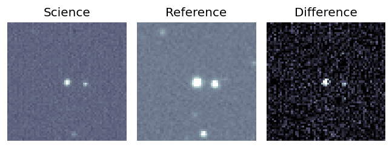
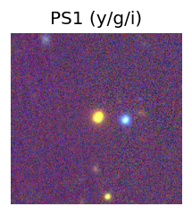
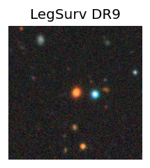
peak abs mag = -20.55 LegacySurvey: 1 sources in 3 arcsec Closest: d = 0.51 arcsec, 226.3 deg (east of north) photoz=0.21 (68% bounds 0.09, 0.31), type=PSF peak abs mag = -22.67 (68% bounds -20.72, -23.6) 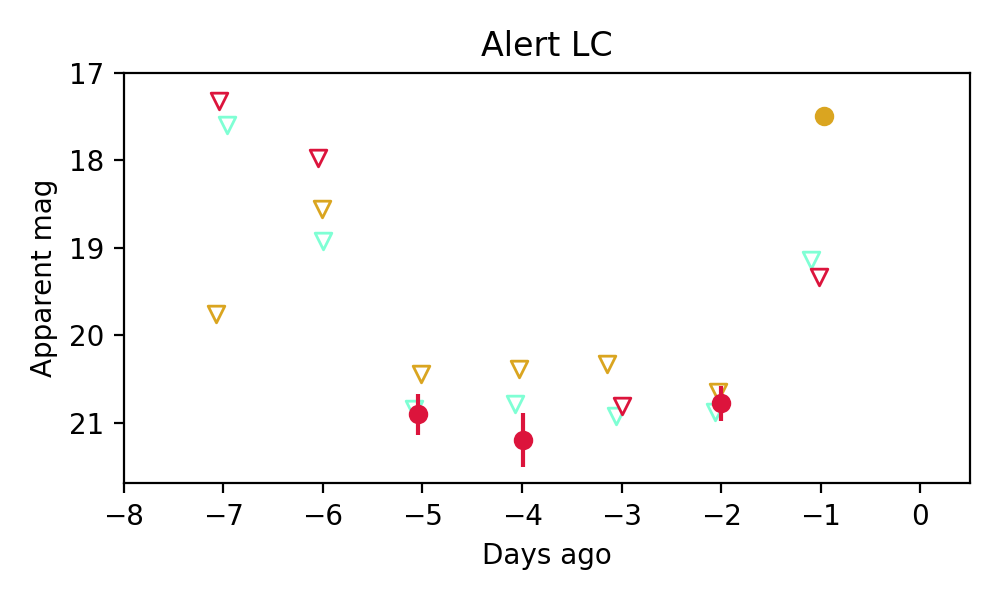
21. ZTF26aaoqccp (FBOT?) [Back to Top] [Share] [Trigger Swift] [Fritz ] [Lasair ]RA, Dec: 222.82467, 9.69404 14h51m17.92s, 9d41m38.53sGalactic (l, b): 6.98855, 56.80318 ext(g-r) = 0.035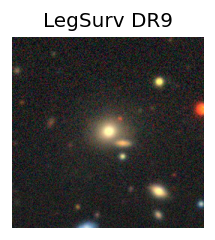
peak abs mag = -21.02 LegacySurvey: 1 sources in 3 arcsec Closest: d = 0.40 arcsec, 307.9 deg (east of north) photoz=0.12 (68% bounds 0.11, 0.12), type=SER peak abs mag = -20.85 (68% bounds -20.75, -20.93)
22. ZTF26aaoqceq (Afterglow?) [Back to Top] [Share] [Trigger Swift] [Fritz ] [Lasair ]RA, Dec: 254.60535, -5.37854 16h58m25.28s, -5d-22m-42.74sGalactic (l, b): 14.14479, 22.12995 ext(g-r) = 0.46
23. ZTF26aaoqelu (FBOT?) [Back to Top] [Share] [Trigger Swift] [Fritz ] [Lasair ]RA, Dec: 218.62863, -0.57147 14h34m30.87s, 0d-34m-17.30sGalactic (l, b): 348.95341, 52.83448 ext(g-r) = 0.04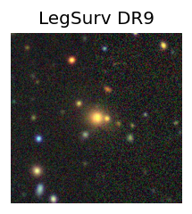
peak abs mag = -21.92 peak abs mag = -21.68 LegacySurvey: 1 sources in 3 arcsec Closest: d = 0.34 arcsec, 276.6 deg (east of north) photoz=0.23 (68% bounds 0.22, 0.25), type=SER peak abs mag = -21.72 (68% bounds -21.59, -21.89)
24. ZTF26aaoqemc (Afterglow?FBOT?) [Back to Top] [Share] [Trigger Swift] [Fritz ] [Lasair ]RA, Dec: 218.29879, -0.59218 14h33m11.71s, 0d-35m-31.85sGalactic (l, b): 348.51017, 53.02898 ext(g-r) = 0.046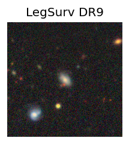
peak abs mag = -23.54 peak abs mag = -23.70 LegacySurvey: 1 sources in 3 arcsec Closest: d = 0.52 arcsec, 216.8 deg (east of north) photoz=0.13 (68% bounds 0.12, 0.15), type=SER peak abs mag = -23.56 (68% bounds -23.26, -23.78)
25. ZTF26aaoqeqy (FBOT?) [Back to Top] [Share] [Trigger Swift] [Fritz ] [Lasair ]RA, Dec: 220.31256, -0.5969 14h41m15.01s, 0d-35m-48.85sGalactic (l, b): 351.01433, 51.7181 ext(g-r) = 0.041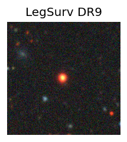
peak abs mag = -5.93 LegacySurvey: 1 sources in 3 arcsec Closest: d = 0.76 arcsec, 103.9 deg (east of north) photoz=0.2 (68% bounds 0.16, 0.24), type=PSF peak abs mag = -23.08 (68% bounds -22.55, -23.59)
26. ZTF26aaoqfbf (FBOT?) [Back to Top] [Share] [Trigger Swift] [Fritz ] [Lasair ]RA, Dec: 218.30143, 1.01918 14h33m12.34s, 1d 1m9.05sGalactic (l, b): 350.26725, 54.25857 ext(g-r) = 0.039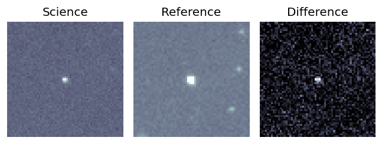
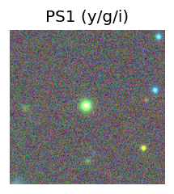
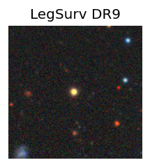
peak abs mag = -5.88 LegacySurvey: 1 sources in 3 arcsec Closest: d = 0.73 arcsec, 88.6 deg (east of north) photoz=0.17 (68% bounds 0.13, 0.25), type=PSF peak abs mag = -21.54 (68% bounds -20.9, -22.43) 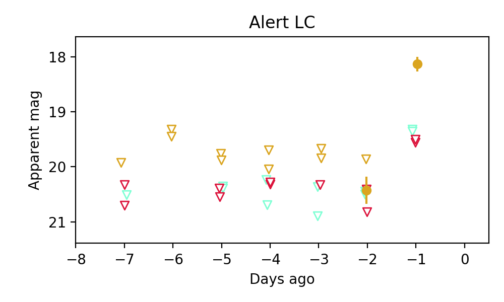
27. ZTF26aaorhib (Afterglow?) [Back to Top] [Share] [Trigger Swift] [Fritz ] [Lasair ]RA, Dec: 86.40144, 44.31278 5h45m36.35s, 44d18m46.00sGalactic (l, b): 166.78888, 7.93905 ext(g-r) = 0.387PS1: 1 source in 3 arcsec Closest: d = 4.75 arcsec photoz=0.60+/-0.12 peak abs mag = -23.86
28. ZTF26aaortbm (FBOT?) [Back to Top] [Share] [Trigger Swift] [Fritz ] [Lasair ]RA, Dec: 91.60567, 25.33522 6h 6m25.36s, 25d20m6.81sGalactic (l, b): 185.44135, 2.18583 WARNING: 1.9 deg from ecliptic plane ext(g-r) = 0.55PS1: 1 source in 3 arcsec Closest: d = 4.21 arcsec photoz=0.74+/-0.33 peak abs mag = -25.42
29. ZTF26aaoswhj (Afterglow?FBOT?) [Back to Top] [Share] [Trigger Swift] [Fritz ] [Lasair ]RA, Dec: 129.15194, 17.73381 8h36m36.47s, 17d44m1.72sGalactic (l, b): 207.6661, 30.95608 WARNING: -0.82 deg from ecliptic plane ext(g-r) = 0.038peak abs mag = -19.58 LegacySurvey: 1 sources in 3 arcsec Closest: d = 0.76 arcsec, 163.3 deg (east of north) photoz=0.1 (68% bounds 0.08, 0.12), type=SER peak abs mag = -18.18 (68% bounds -17.83, -18.65) Consistent with synchrotron, g-r>0!
30. ZTF26aaotobp (FBOT?) [Back to Top] [Share] [Trigger Swift] [Fritz ] [Lasair ]RA, Dec: 152.8497, 48.80957 10h11m23.93s, 48d48m34.46sGalactic (l, b): 166.84808, 52.37883 ext(g-r) = 0.011LegacySurvey: 1 sources in 3 arcsec Closest: d = 0.61 arcsec, 318.3 deg (east of north) photoz=0.72 (68% bounds 0.31, 1.04), type=REX peak abs mag = -23.23 (68% bounds -21.02, -24.21) Consistent with synchrotron, g-r>0!
31. ZTF26aaotwfz (Afterglow?) [Back to Top] [Share] [Trigger Swift] [Fritz ] [Lasair ]RA, Dec: 157.91722, -7.06454 10h31m40.13s, -7d-3m-52.35sGalactic (l, b): 253.13579, 41.90756 ext(g-r) = 0.044LegacySurvey: 1 sources in 3 arcsec Closest: d = 5.66 arcsec, 317.6 deg (east of north) photoz=0.8 (68% bounds 0.56, 1.09), type=PSF peak abs mag = -23.91 (68% bounds -22.95, -24.73)
32. ZTF26aaovklu (FBOT?) [Back to Top] [Share] [Trigger Swift] [Fritz ] [Lasair ]RA, Dec: 186.0036, 15.14488 12h24m0.86s, 15d 8m41.57sGalactic (l, b): 273.53035, 76.42539 ext(g-r) = 0.024LegacySurvey: 1 sources in 3 arcsec Closest: d = 0.11 arcsec, 180.7 deg (east of north) photoz=0.36 (68% bounds 0.23, 0.54), type=EXP peak abs mag = -20.54 (68% bounds -19.47, -21.57) Consistent with synchrotron, g-r>0!
33. ZTF26aaovkyf (Afterglow?) [Back to Top] [Share] [Trigger Swift] [Fritz ] [Lasair ]RA, Dec: 184.3223, 8.06815 12h17m17.35s, 8d 4m5.35sGalactic (l, b): 278.36711, 69.29495 ext(g-r) = 0.025LegacySurvey: 1 sources in 3 arcsec Closest: d = 0.34 arcsec, 251.7 deg (east of north) photoz=1.0 (68% bounds 0.87, 1.14), type=PSF peak abs mag = -22.83 (68% bounds -22.45, -23.18) Consistent with synchrotron, g-r>0!
34. ZTF26aaoxiwv (FBOT?) [Back to Top] [Share] [Trigger Swift] [Fritz ] [Lasair ]RA, Dec: 227.51654, 18.38191 15h10m3.97s, 18d22m54.88sGalactic (l, b): 24.99015, 56.98398 ext(g-r) = 0.028peak abs mag = -22.03 LegacySurvey: 1 sources in 3 arcsec Closest: d = 0.66 arcsec, 263.4 deg (east of north) photoz=0.16 (68% bounds 0.12, 0.21), type=SER peak abs mag = -19.26 (68% bounds -18.64, -19.96) Consistent with synchrotron, g-r>0!
35. ZTF26aaoxjdq (FBOT?) [Back to Top] [Share] [Trigger Swift] [Fritz ] [Lasair ]RA, Dec: 230.36791, 15.77988 15h21m28.30s, 15d46m47.56sGalactic (l, b): 22.67203, 53.45507 ext(g-r) = 0.038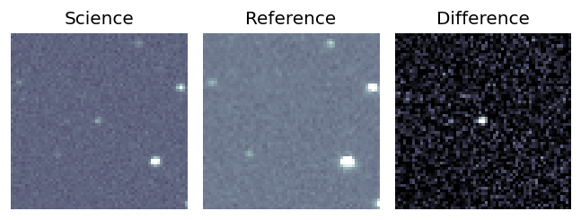
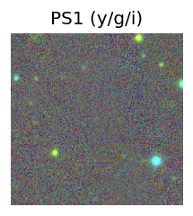
LegacySurvey: 1 sources in 3 arcsec Closest: d = 0.39 arcsec, 321.3 deg (east of north) photoz=0.75 (68% bounds 0.49, 0.99), type=REX peak abs mag = -23.32 (68% bounds -22.21, -24.06) 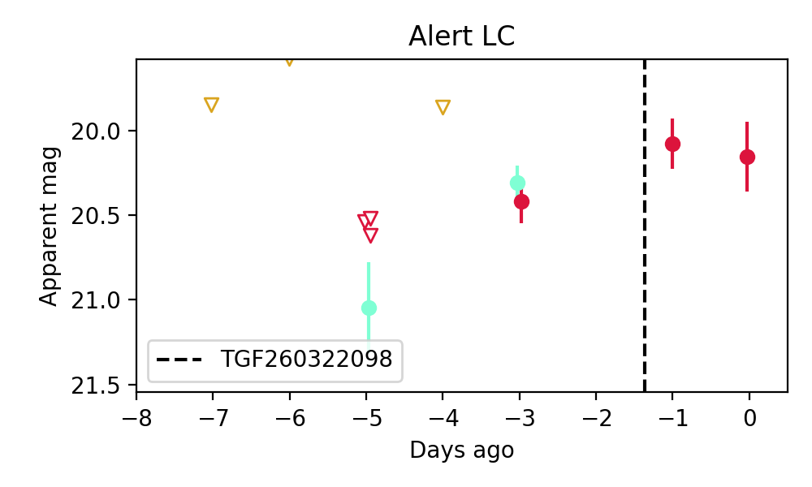